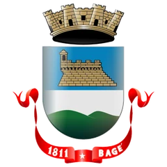

Tecnologia e integração a serviço da vida
O Centro Integrado de Operações de Segurança Pública de Bagé — CIOSP é uma iniciativa da Prefeitura Municipal, por meio da Secretaria de Segurança e Mobilidade Urbana, voltada à modernização da segurança pública e à proteção da população. Sua proposta é integrar tecnologia, informação e cooperação entre instituições para apoiar a prevenção de ocorrências e tornar mais ágil e coordenado o atendimento às demandas do município.
O projeto reúne videomonitoramento urbano, cercamento eletrônico e ferramentas de análise de informações para auxiliar na proteção dos espaços públicos, na segurança viária e no acompanhamento de situações de emergência. A integração entre os órgãos de segurança, fiscalização, socorro e defesa civil permitirá ampliar a compreensão do que acontece na cidade e apoiar decisões com base em informações compartilhadas.
Mais do que uma central de câmeras, o CIOSP foi concebido como um espaço de atuação conjunta, planejamento e inteligência. Seu compromisso é contribuir para uma Bagé mais segura, com respeito à privacidade, uso responsável dos dados e atenção permanente à vida e ao bem-estar de quem vive, trabalha e circula pelo município.
Instituições integradas
